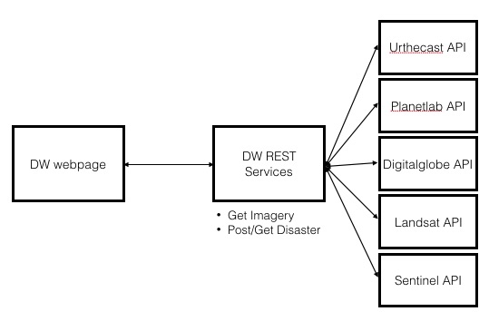

New Project: Disaster Watch
Building a plateform to access imagery where it's needed
New year, new project, new method...
During the past 4 month I've been working a project that should have been released early december, but sadly I had to put everything on hold (I hope I'll be able make it public in 2016). As the secret project is on hold, I'm thinking about another one. But for this one I'll try something different.
One 'leit motiv' for building RemotePixel.ca was to ease access to satellite imagery. Following this idea, I'm launching a new project Disaster Watch (source code on Github).
Project aim is to create a simple and elegant plateform to visualize ongoing disaster location and able anyone to check satellite imagery covering its area.
FrontEnd:
BackEnd:
This new project is maybe too ambitious, and this is the reason why I'm asking for help!
Project is not yet fully defined so if you have ideas or if you want to contribute please contact me @ contact@remotepixel.ca or on Github.
More info and Usefull links:
- Date: December 2015
- Category: OpenData